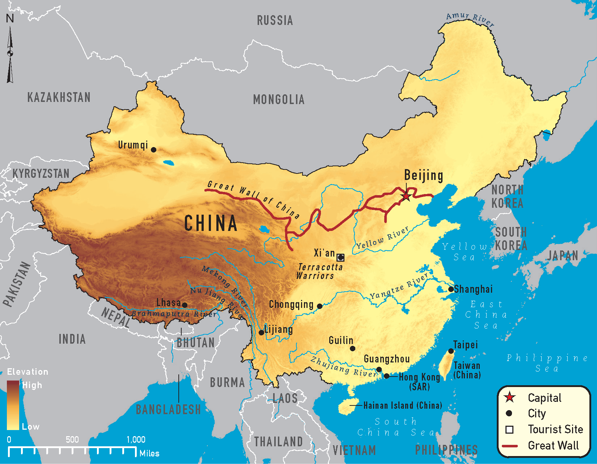
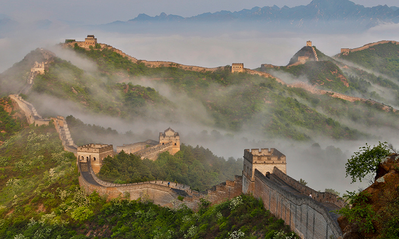

El imponente paisaje montañoso de Mutianyu la convierte en una de las mejores elecciones a la hora
de visitar la Gran Muralla China. Se encuentra ubicada a menos de 90 kilómetros de Pekín y, aunque es una de
las zonas más populares, no tiene un turismo tan masificado como Badaling. Por ejemplo,
si nos planteamos indicar el lugar donde inicia la Gran Muralla, todas las opiniones parecen recaer
en un lugar llamado Cabeza del viejo dragón, ubicado en la ciudad de Qinhuangdao, a unos 300 kilómetros al este de
Beijing donde se encuentra con el Mar de Bohai.


La Gran Muralla china es una antigua fortificación china construida y reconstruida entre el siglo v a. C. y
el siglo xvi para proteger la frontera norte del Imperio chino durante las sucesivas dinastías imperiales de los ataques de los
nómadas xiongnu de Mongolia y Manchuria. Contando sus ramificaciones y construcciones secundarias, se calcula que tiene unos 21 200 km
de longitud, desde la frontera con Corea, al borde del río Yalu, hasta el desierto de Gobi, a lo largo de un arco que delinea
aproximadamente el borde sur de Mongolia Interior, aunque hoy solo se conserva un 30 % de ella. En promedio, mide de 6 a 7 m de alto y
de 4 a 5 m de ancho.
La muralla tardó en construirse 2000 años y fue obra de varias dinastías que fueron poniendo
su granito de arena
La Gran Muralla china es el lugar más visitado del mundo, de hecho ostenta un curioso récord, el 1 de octubre de 2014, durante una
festividad nacional, el monumento fue visitado por la increíble cantidad de 8 millones de personas.